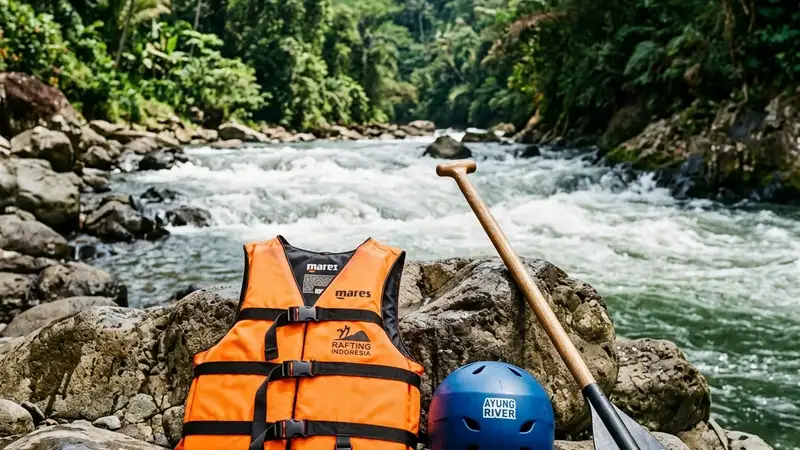

Perlengkapan keselamatan rafting yang wajib dipakai peserta meliputi jaket pelampung, helm pelindung kepala, dan dayung sesuai standar operator. Ketiga perlengkapan ini menjadi bagian dari aturan keselamatan rafting secara keseluruhan.
- Jaket pelampung menjaga peserta tetap mengapung saat berada di air.
- Helm melindungi kepala dari benturan saat melewati jeram.
- Dayung membantu peserta mengatur arah dan kecepatan perahu.
- Sebagian besar operator menyediakan perlengkapan lengkap bagi peserta.
- Perlengkapan perlu diperiksa kondisinya sebelum digunakan.
Perlengkapan keselamatan menjadi elemen dasar yang menentukan tingkat keamanan peserta saat mengikuti rafting. Artikel ini membahas jenis perlengkapan yang umum digunakan, fungsi masing-masing, serta cara memastikan perlengkapan tersebut terpasang dengan benar sebelum perahu diturunkan ke sungai.
Apa Saja Jenis Perlengkapan Keselamatan Rafting
Jenis perlengkapan keselamatan rafting yang umum digunakan meliputi jaket pelampung, helm pelindung kepala, dayung, dan alas kaki khusus.
Setiap jenis perlengkapan memiliki fungsi berbeda namun saling melengkapi untuk menjaga keselamatan peserta selama berada di sungai. Operator rafting umumnya menyesuaikan jumlah dan jenis perlengkapan dengan karakteristik rute serta tingkat kesulitan jeram yang akan dilalui.
Bagaimana Fungsi Jaket Pelampung Saat Rafting
Fungsi jaket pelampung saat rafting adalah menjaga peserta tetap mengapung di permukaan air apabila terlempar atau terjatuh dari perahu.
Jaket pelampung dirancang dengan bahan yang memiliki daya apung tertentu sehingga membantu peserta bertahan di air tanpa harus terus-menerus berenang. Peserta disarankan memastikan tali pengikat jaket terpasang rapat di bagian dada dan pinggang agar jaket tidak terlepas saat terkena benturan arus.
Bagaimana Fungsi Helm Pelindung Kepala Saat Rafting
Fungsi helm pelindung kepala saat rafting adalah melindungi bagian kepala peserta dari benturan dengan bebatuan, dinding sungai, atau bagian perahu saat melintasi jeram.
Helm rafting umumnya terbuat dari bahan yang ringan namun cukup kuat menahan benturan ringan hingga sedang. Helm perlu disesuaikan ukurannya dengan kepala peserta agar tidak mudah bergeser atau terlepas saat perahu bergerak cepat melewati arus deras.
Apa Peran Dayung dalam Perlengkapan Rafting
Peran dayung dalam perlengkapan rafting adalah sebagai alat utama untuk mengatur arah, kecepatan, dan keseimbangan perahu sesuai instruksi pemandu.
Peserta biasanya diajarkan teknik dasar memegang dan mengayuh dayung saat sesi briefing sebelum keberangkatan. Penggunaan dayung yang tepat membantu perahu bergerak lebih stabil, terutama saat melewati titik jeram dengan arus yang lebih kuat.
Apakah Peserta Perlu Membawa Perlengkapan Sendiri Saat Rafting
Peserta umumnya tidak perlu membawa perlengkapan keselamatan sendiri karena sebagian besar operator rafting telah menyediakan jaket pelampung, helm, dan dayung sebagai bagian dari paket yang ditawarkan.
Meski demikian, peserta tetap disarankan mengenakan pakaian yang cepat kering serta alas kaki yang tidak mudah lepas, seperti sepatu tali atau sandal gunung, untuk menambah kenyamanan dan perlindungan tambahan selama perjalanan.
Bagaimana Cara Memastikan Perlengkapan Terpasang dengan Benar
Cara memastikan perlengkapan terpasang dengan benar adalah dengan memeriksa tali pengikat jaket pelampung dan helm sebelum perahu diturunkan ke sungai, serta menanyakan kepada pemandu apabila terasa longgar.
Pemeriksaan ini sebaiknya dilakukan bersama pemandu sebelum keberangkatan, bukan hanya mengandalkan pemasangan awal saat perlengkapan dibagikan. Peserta juga disarankan tidak melonggarkan atau melepas perlengkapan tersebut secara sepihak selama perjalanan berlangsung.
FAQ
Apakah jaket pelampung wajib dipakai sepanjang perjalanan rafting?
Jaket pelampung wajib dipakai sepanjang perjalanan rafting karena berfungsi menjaga peserta tetap mengapung apabila terjatuh dari perahu.
Apakah operator rafting menyediakan helm untuk semua peserta?
Sebagian besar operator rafting menyediakan helm bagi seluruh peserta sebagai bagian dari perlengkapan standar yang termasuk dalam paket rafting.
Apa yang sebaiknya dikenakan peserta selain perlengkapan yang disediakan operator?
Peserta disarankan mengenakan pakaian yang cepat kering dan alas kaki yang tidak mudah lepas untuk menambah kenyamanan selama rafting.
Arya
penulis artikel yang sudah berpengalaman di dalam dunia wisata outbound Batu Malang.